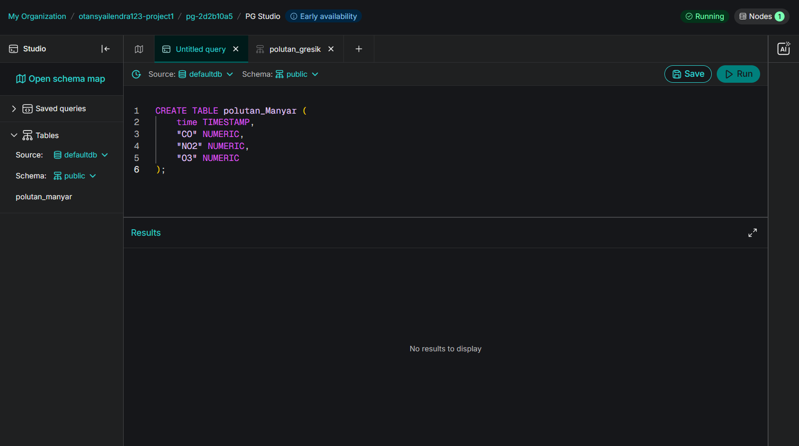
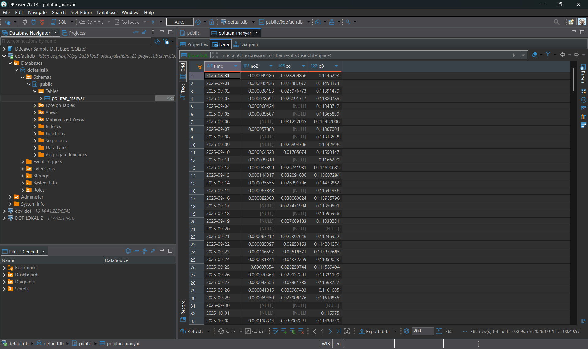

Analisis Time Series: Persiapan Data Polutan Manyar#
Dalam proyek ini, kita menggunakan data historis kualitas udara (polutan) yang direkam berdasarkan urutan waktu. Sebelum melakukan pemodelan dan peramalan tren time series, data mentah dikelola di dalam cloud database agar proses penarikan data ke sistem analitik menjadi lebih efisien dan terpusat.
Dokumen ini mencakup alur lengkap mulai dari migrasi data awal hingga pengolahan dasar menggunakan KNIME Analytics Platform, termasuk penjelasan matematis di balik setiap fitur statistik yang dihasilkan.
1. Migrasi Data ke Aiven PostgreSQL (via DBeaver)#
Tahap pertama bertujuan untuk memindahkan data historis (polutan_Manyar_2025_2026.csv) ke dalam layanan cloud database Aiven agar siap diakses secara daring dari berbagai platform, termasuk DBeaver dan KNIME.
1.1. Pembuatan Struktur Tabel di Aiven#
Langkah pertama sebelum memasukkan data adalah membuat penampung datanya, yaitu sebuah tabel. Karena ini adalah analisis runtun waktu, tipe data untuk kolom waktu (time) wajib didefinisikan sebagai TIMESTAMP.
Melalui fitur PG Studio di dashboard Aiven, kita dapat membuat tabel dengan menjalankan query SQL. Berikut adalah langkah-langkahnya:
Masuk ke dashboard Aiven dan pilih layanan PostgreSQL yang telah dibuat.
Buka menu PG Studio.
Pastikan Database diatur ke
defaultdbdan Schema diatur kepublic.Ketikkan perintah SQL berikut pada editor:
CREATE TABLE polutan_Manyar (
time TIMESTAMP,
"CO" NUMERIC,
"NO2" NUMERIC,
"O3" NUMERIC
);
Klik tombol Run untuk mengeksekusi query. Tabel
polutan_Manyarkini telah berhasil dibuat di cloud.

(Keterangan: Tampilan PG Studio di Aiven saat pembuatan tabel)1.2. Menghubungkan DBeaver dengan Aiven#
Agar kita bisa mengelola data dan mengimpor file CSV dengan mudah, kita akan menggunakan aplikasi DBeaver yang ada di komputer lokal dan menghubungkannya ke database Aiven di cloud.
Langkah-langkah koneksi:
Di DBeaver, klik New Database Connection dan pilih PostgreSQL.
Masukkan parameter koneksi yang didapatkan dari halaman Overview di dashboard Aiven, meliputi:
Host: Service URI atau Host dari Aiven.
Port: Port PostgreSQL dari Aiven.
Database:
defaultdbUsername & Password: Kredensial dari Aiven.
Penting: Buka tab SSL atau Driver Properties, pastikan parameter
sslmodediatur menjadirequire. Ini wajib dilakukan agar DBeaver dapat terhubung ke Aiven yang mewajibkan koneksi aman menggunakan SSL.Klik Test Connection untuk memastikan koneksi berhasil, lalu klik Finish.
1.3. Import Data CSV ke DBeaver#
Setelah DBeaver berhasil terhubung ke Aiven dan tabel polutan_Manyar sudah terlihat di skema public, saatnya memasukkan data dari file CSV.
Langkah-langkah import data:
Pada Database Navigator di DBeaver, cari tabel
polutan_Manyar(defaultdb>Schemas>public>Tables).Klik kanan pada tabel
polutan_Manyar, lalu pilih Import Data.Pilih format CSV dan cari file
polutan_Manyar_2025_2026.csvdi komputer lokal Anda.Ikuti instruksi pada layar (pastikan pemisah kolom/delimeter sesuai, biasanya koma
,).Selesaikan proses import. Data dari CSV akan diunggah melalui DBeaver dan langsung masuk ke cloud database Aiven.

(Keterangan: Tampilan DBeaver dengan data polutan_Manyar yang berhasil diimport)Verifikasi: Anda bisa mengecek total baris data yang berhasil diunggah dengan menjalankan query SQL ini di DBeaver:
SELECT COUNT(*) FROM polutan_Manyar;
2. Integrasi dan Pengolahan Time Series di KNIME#
Setelah data siap dan tersimpan dengan aman di cloud database Aiven, tahapan selanjutnya adalah menarik data tersebut ke ruang kerja lokal (KNIME Analytics Platform) untuk pra-pemrosesan dan analisis tren.
Menghubungkan Aiven ke KNIME#
Proses menghubungkan KNIME ke Aiven pada prinsipnya mirip dengan menghubungkan DBeaver. KNIME akan mengambil data secara langsung dari cloud. Alur koneksinya (workflow) dibangun menggunakan beberapa node utama secara berurutan:
PostgreSQL Connector: Diatur menggunakan detail host, port, dan kredensial server Aiven. Pada tab JDBC Parameters, properti tambahan
sslmodedengan nilairequiredikonfigurasi agar node dapat terhubung. Hal ini penting karena Aiven menuntut koneksi SSL. (Keterangan: Jendela konfigurasi PostgreSQL Connector di mana kredensial database dimasukkan)
(Keterangan: Jendela konfigurasi PostgreSQL Connector di mana kredensial database dimasukkan)DB Table Selector: Diarahkan ke skema
publicuntuk menyeleksi tabelpolutan_Manyar. (Keterangan: Keseluruhan workflow KNIME beserta cuplikan hasil pemilihan tabel)
(Keterangan: Keseluruhan workflow KNIME beserta cuplikan hasil pemilihan tabel)DB Reader: Mengeksekusi penarikan data dari database ke dalam memori KNIME agar siap diolah lebih lanjut. Total data yang berhasil ditarik berjumlah 365 baris, dengan rentang waktu 2025-08-31 sampai 2026-08-30.
 (Keterangan: Cuplikan data polutan yang berhasil ditarik ke dalam KNIME melalui node DB Reader)
(Keterangan: Cuplikan data polutan yang berhasil ditarik ke dalam KNIME melalui node DB Reader)Statistics: Node ini ditambahkan setelah
DB Readerdan berfungsi sebagai langkah awal yang sangat krusial untuk Eksplorasi Data (Exploratory Data Analysis). Alih-alih mengecek polutan satu per satu, node Statistics akan secara otomatis memproses seluruh kolom numerik (CO, NO2, O3) secara bersamaan dan menghasilkan ringkasan statistik deskriptif. (Keterangan: Output tabel dari node Statistics yang merangkum perhitungan statistik deskriptif untuk seluruh kolom polutan secara bersamaan dalam satu tampilan)
(Keterangan: Output tabel dari node Statistics yang merangkum perhitungan statistik deskriptif untuk seluruh kolom polutan secara bersamaan dalam satu tampilan)
2.1. Penjelasan Rumus dan Contoh Perhitungan Fitur pada Node Statistics#
Bagian ini menjelaskan makna, rumus matematis, dan contoh perhitungan manual untuk tiap fitur statistik yang muncul di output node Statistics. Sebagai contoh perhitungan, digunakan 5 data NO2 pertama dari file polutan_Manyar_2025_2026.csv (tanggal 2025-08-31 s.d. 2025-09-04):
Tanggal |
Nilai NO2 |
|---|---|
2025-08-31 |
0.00004948597 |
2025-09-01 |
0.00004543574 |
2025-09-02 |
0.00003819312 |
2025-09-03 |
0.00007869070 |
2025-09-04 |
0.00006042393 |
Jumlah data \(n = 5\), dan setelah diurutkan: 0.00003819312, 0.00004543574, 0.00004948597, 0.00006042393, 0.00007869070
a) Missing Values (Jumlah Data Kosong)
Menghitung berapa baris data yang bernilai kosong (NULL) pada suatu kolom. Berguna untuk menentukan strategi imputasi (misalnya interpolasi linear) sebelum data dianalisis lebih lanjut, karena data kosong bisa terjadi akibat kegagalan sensor pada hari tertentu.
Contoh: Berdasarkan pengecekan langsung pada file polutan_Manyar_2025_2026.csv (365 baris), terdapat missing values pada kolom NO2 sebanyak 177, CO sebanyak 165, dan O3 sebanyak 4. Karena itu, node Missing Value dan strategi imputasi perlu dijalankan sebelum analisis lanjutan.
b) Minimum & Maximum
Nilai terkecil dan terbesar dalam suatu kolom. Digunakan untuk mendeteksi anomali/outlier, misalnya memastikan tidak ada nilai polutan yang negatif atau nilai yang jauh di luar kewajaran.
Contoh (5 data NO2 di atas): $\(\text{Min} = 0.00003819312 \qquad \text{Max} = 0.00007869070\)$
c) Mean (Rata-rata)
Nilai tengah dari seluruh data, dihitung dengan menjumlahkan semua nilai lalu membaginya dengan jumlah data.
Contoh: $\(\bar{x} = \frac{0.00004948597+0.00004543574+0.00003819312+0.00007869070+0.00006042393}{5} = 0.00005444589\)$
d) Median (50% Quantile)
Nilai tengah setelah data diurutkan. Lebih tahan terhadap outlier dibanding Mean, karena tidak terpengaruh oleh nilai ekstrem.
Contoh: Data terurut: 0.00003819312, 0.00004543574, 0.00004948597, 0.00006042393, 0.00007869070 → nilai tengah (posisi ke-3) adalah 0.00004948597.
e) Overall Sum (Jumlah Total)
Total penjumlahan seluruh nilai dalam kolom.
Contoh: $\(\text{Sum} = 0.00004948597+0.00004543574+0.00003819312+0.00007869070+0.00006042393 = 0.00027222946\)$
f) Variance (Varians)
Mengukur seberapa jauh sebaran data dari nilai rata-ratanya. Semakin besar variance, semakin bervariasi/tersebar datanya.
Contoh (menggunakan \(\bar{x}=0.00005444589\)):
\(x_i\) |
\(x_i - \bar{x}\) |
\((x_i-\bar{x})^2\) |
|---|---|---|
0.00004948597 |
-0.00000495992 |
0.00000000002460 |
0.00004543574 |
-0.00000901055 |
0.00000000008119 |
0.00003819312 |
-0.00001625277 |
0.00000000026415 |
0.00007869070 |
0.00002424481 |
0.00000000058781 |
0.00006042393 |
0.00000597804 |
0.00000000003574 |
g) Standard Deviation (Simpangan Baku)
Akar kuadrat dari variance. Satuannya sama dengan satuan data asli (µg/m³), sehingga lebih mudah diinterpretasikan dibanding variance.
Contoh: $\(s = \sqrt{0.00000000024837} \approx 0.00001575979\)$
Artinya, secara rata-rata nilai NO2 menyimpang sekitar 0.00001575979 dari rata-ratanya (0.00005444589) pada contoh lima data tersebut.
h) Skewness (Kemencengan Distribusi)
Mengukur simetri sebaran data. Bila skewness ≈ 0, distribusi cenderung simetris. Bila positif, ekor distribusi condong ke kanan (banyak nilai kecil, sedikit nilai sangat besar). Bila negatif, ekor condong ke kiri.
Contoh (menggunakan simpangan baku populasi \(\sigma \approx 0.000014096\)):
Menghitung \((x_i-\bar{x})^3\) untuk tiap data, dijumlahkan, dibagi \(n\), lalu dibagi \(\sigma^3\), menghasilkan:
Nilai positif ini menunjukkan bahwa lima data contoh tersebut sedikit condong ke kanan.
i) Kurtosis (Keruncingan Distribusi)
Mengukur seberapa “runcing” atau “landai” distribusi data dibandingkan distribusi normal. Kurtosis > 0 berarti distribusi lebih runcing (banyak nilai ekstrem/outlier), kurtosis < 0 berarti lebih landai/merata.
Contoh: $\(\text{Kurtosis} \approx -0.85\)$
Nilai negatif menunjukkan sebaran 5 data contoh ini lebih landai (lebih merata, tidak ada nilai yang terlalu ekstrem) dibanding distribusi normal.
Catatan: Contoh perhitungan di atas disederhanakan dengan 5 data agar mudah dipahami langkah demi langkah. Berikut adalah ringkasan hasil aktual dari 365 baris pada file
polutan_Manyar_2025_2026.csv, sebagai pembanding terhadap output node Statistics di KNIME (Gambar 4). Nilai statistik dihitung dari data yang tersedia pada masing-masing kolom; missing values tidak dihitung dalam Min, Max, Mean, Median, Variance, Skewness, Kurtosis, dan Overall Sum:
Fitur |
NO2 (188 tersedia) |
CO (200 tersedia) |
O3 (361 tersedia) |
|---|---|---|---|
Missing Values |
177 |
165 |
4 |
Minimum |
0.00001543805 |
0.01133146 |
0.11028662 |
Maximum |
0.00063134 |
0.04372259 |
0.12317621 |
Mean |
0.00008140 |
0.02915624 |
0.11584706 |
Median |
0.00006687 |
0.02911604 |
0.11571048 |
Standard Deviation |
0.00006376 |
0.00424835 |
0.00243485 |
Variance |
0.00000000406541 |
0.00001804847 |
0.00000592852 |
Skewness |
4.60 |
0.21 |
0.33 |
Kurtosis (excess) |
32.84 |
2.30 |
-0.01 |
Overall Sum |
0.01528314 |
5.83124857 |
41.82078750 |
Data NO2 memiliki skewness 4.60 dan kurtosis excess 32.84, yang menunjukkan ekor kanan sangat kuat dan adanya nilai ekstrem. CO dan O3 lebih mendekati distribusi simetris, dengan skewness masing-masing 0.21 dan 0.33.
3. Kesimpulan & Hasil Pre-processing#
Dari tahapan pengumpulan data ke database cloud (Aiven) hingga proses transformasi di dalam KNIME, kita telah berhasil mempersiapkan data mentah menjadi himpunan data (dataset) runtun waktu yang berkualitas tinggi. Berikut adalah rangkuman dari hasil pre-processing ini:
Sentralisasi Data yang Aman: Data historis polutan Manyar kini tersimpan dengan aman di Aiven PostgreSQL dan diakses menggunakan enkripsi SSL, memungkinkan kolaborasi atau penarikan data dari berbagai platform kapan saja tanpa harus memindahkan file CSV secara manual.
Integrasi ke KNIME Berhasil: Melalui 4 node (PostgreSQL Connector, DB Table Selector, DB Reader, Statistics), seluruh 365 baris data polutan berhasil ditarik dari cloud database ke ruang kerja lokal KNIME tanpa kendala. Data terdiri atas kolom
time,NO2,CO, danO3, dengan missing values yang perlu ditangani sebelum analisis lanjutan.Pemahaman Statistik yang Terukur: Setiap fitur pada node Statistics (Min, Max, Mean, Median, Standard Deviation, Variance, Skewness, Kurtosis, dan Overall Sum) telah dijelaskan lengkap dengan rumus dan contoh perhitungan manual, sehingga hasil eksplorasi data tidak hanya dibaca sebagai angka, tapi juga dipahami maknanya. Dari hasil ini juga diketahui kolom
timemasih bertipe String dan perlu dikonversi pada tahap berikutnya.